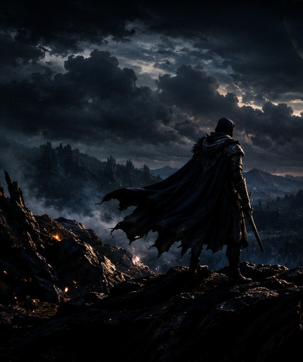

PLAYER XP
لاعب REIGN
EXPLORER
R
XP0 XP
0 / 1000ألعاب متتبعة
0hساعات مسجلة
0شارات مكتسبة
ادخل إلى عوالم الألعاب من بوابة واحدة؛ أدلة للمراحل والزعماء، أسرار مخفية، خرائط تفاعلية، وخطط تساعدك على إتقان كل مغامرة.

مكتبة ألعاب PS4 منظمة لتسهيل الاختيار والمقارنة. ابحث باسم اللعبة أو نوعها، ثم رتّب النتائج بحسب سنة الإصدار أو الوقت التقريبي لإنهائها، واحفظ المفضلة لتعود إليها لاحقًا. تقديرات الوقت إرشادية وقد تختلف باختلاف أسلوب اللعب.
جرّب كلمة أخرى أو أزل بعض الفلاتر.
أوقات اللعب تقديرية وليست ضمانًا؛ تختلف حسب مستوى الصعوبة وأسلوب اللعب. الصور تأتي من روابط صور الألعاب الخارجية، وقد تحتاج اتصالًا بالإنترنت وقد تتغير أو لا تتوفر لبعض العناوين. تحقق من توفر نسخة PS4 تحديدًا قبل الاعتماد على أي عنوان.
احسب المدة التقريبية التي تحتاجها لإنهاء لعبة بناءً على وقت لعبك اليومي.
الأوقات تقريبية مجمّعة من تقديرات شائعة للاعبين وليست بيانات رسمية؛ الألعاب التنافسية والمستمرة لا تملك نهاية ثابتة.
ملف لاعب يمكنك حفظه على هذا الجهاز أو ربطه بحساب Google لحفظ تقدمك ومزامنته بين أجهزتك.
اربط حساب Google لحفظ ملف اللاعب والتقدم والمفضلة والمجموعات في السحابة واستعادتها على جهاز آخر.
الخصوصية: يستخدم REIGN تسجيل Google عبر Firebase. لا تدخل كلمة مرور Gmail داخل الموقع؛ تظهر نافذة Google الرسمية. بيانات الألعاب الخاصة تُحفظ في حسابك ولا تكون عامة. يجب إعداد مشروع Firebase الخاص بك قبل تفعيل هذه الميزة.
افتح تفاصيل أي لعبة وحدد حالتها لتظهر هنا.
حدد نوع التجربة والوقت المتاح، وسيقترح REIGN ألعابًا من المكتبة تناسب اختياراتك.
ابدأ بخطة منظمة للإنجازات. لا نعرض عددًا أو صعوبة غير موثّقين؛ استخدم رابط البحث عن دليل خاص باللعبة للتحقق من المتطلبات.
اختر لعبة لمعرفة وقت الإكمال التقريبي، ثم افتح دليلًا متخصصًا للتأكد من التروفيات القابلة للفوات، ومستوى الصعوبة، ومتطلبات اللعب عبر الإنترنت.
أوقات الإكمال تقديرية من بيانات REIGN وليست وقت بلاتينيوم مؤكدًا.
قائمة التحقق تحفظ على هذا المتصفح. REIGN مستقل ولا يضمن دقة أدلة الجهات الخارجية.
مجموعات سريعة تساعدك على العثور على نوع التجربة التي تريدها.
رتبك وتحدياتك ومكتبتك الشخصية في مكان واحد. جميع البيانات محلية على هذا المتصفح.
EXPLORER
الاختيار يتغير حسب اليوم، وهو اقتراح تحريري وليس تقييمًا رسميًا.
أكمل المهام وسجّل تقدمك للحصول على شارات محلية.
صدّر ملفًا احتياطيًا للمفضلة والتقدم والملف الشخصي والمجموعات، أو استعده لاحقًا على هذا المتصفح.
REIGN ULTRA لا يتصل بحساب PlayStation ولا يقرأ التروفيات الفعلية من الجهاز. XP والساعات والشارات ميزات تنظيمية داخل الموقع فقط.
دفتر جلساتك، أهدافك، عجلة اختيار اللعبة، وإحصاءاتك الشخصية — محفوظة على جهازك.
احتَر أقل، والعب أكثر. اختر من قائمة «أريد لعبها» أو من المكتبة كلها.
حدد هدفًا واقعيًا لساعات اللعب هذا الشهر، وتابع تقدمك تلقائيًا من جلساتك المسجلة.
لم تسجّل جلسات بعد. ابدأ بجلسة اليوم!
معلومات أساسية قبل التعديل أو تثبيت محتوى على جهازك.
تحقق من إصدار النظام، وتوافق النسخة، ومصدر الملفات. لا توجد طريقة واحدة تناسب كل أجهزة PS4؛ التفاصيل تتغير حسب إصدار النظام ونوع المحتوى.
خطوات سريعة لمعرفة رقم إصدار برنامج النظام.
المنطقة، التحديث، ورقم النسخة أمور مهمة.
النسخ الاحتياطي ومصادر الملفات الموثوقة.
تعرّف على Homebrew وGoldHEN وملفات التحديث.
مركز مساعدة داخل REIGN: خطط تقدم ونصائح وأهداف قابلة للحفظ، مع إرشادات عملية حسب نوع اللعبة.
اختر لعبة لعرض إرشاداتها وأهدافها داخل الموقع.
الأدلة هنا إرشادية وليست walkthrough رسميًا كاملًا لكل مهمة. تقدّمك يُحفظ محليًا على هذا المتصفح.
خطة عامة تساعدك على تنظيم التقدم دون حرق أحداث القصة.
خرائط العوالم كما تظهر داخل الألعاب فقط. لا خرائط واقعية، ولا روابط تنقلك إلى مواقع أخرى. الصور المعروضة داخل الصفحة قد تحتاج اتصالًا بالإنترنت إذا كان مصدر الصورة الأصلي خارجيًا.
ستظهر هنا خريطة اللعبة عندما تتوفر صورة موثقة لها.
لا توجد روابط خارجية للتنقل من هذه الصفحة.
هذه خرائط من داخل الألعاب أو خرائط مرجعية لعالم اللعبة وليست خرائط واقعية. بعض الألعاب لا تمتلك خريطة عالم مفتوح، وبعض مصادر الصور قد لا تسمح بعرضها داخل مواقع أخرى.
أرشيف تفاعلي يجمع خرائط الألعاب المتاحة وأدلة القصة والكائنات والأسرار والخط الزمني ومعرض الصور. اختر عنوانًا لعرض ما يتوفر له من معلومات، واستخدمه كمرجع أثناء اللعب بدل التنقل بين أقسام متفرقة. لا تُعرض التفاصيل غير المتحققة على أنها حقائق.
المحتوى التفصيلي يختلف حسب اللعبة. عندما لا تتوفر معلومة موثقة لعنوان محدد، يوضح REIGN ذلك بدل اختراع تفاصيل أو أحداث.
مساحة عمل واحدة ترافقك من أول مهمة إلى آخر إنجاز: تتبّع المقتنيات، واستعد للمواجهات، وخطّط للوصول إلى 100%، وافهم تبعات القرارات، ونظّم المهام، واختر مستوى الصعوبة الذي يناسب خبرتك. اختر لعبة ثم انتقل بين الأدوات؛ تُحفظ علامات الإنجاز وملاحظاتك على هذا المتصفح.
المعلومات التفصيلية متاحة لعناوين محددة فقط، ومذكور مرجع التحقق داخل الأداة. الألعاب الأخرى تعرض تنبيهًا بدل اختلاق معلومات. الحفظ محلي ولا يقرأ ملفات الحفظ من جهاز PlayStation.
ملاحظات مختصرة تساعدك على استخدام المكتبة بشكل أفضل.
أضف ألعابًا جديدة بسهولة من ملف البيانات، مع التصنيف والوصف وسنة الإصدار.
REIGN ARCHIVE 01استخدم الاسم أو نوع اللعبة أو سنة الإصدار، ثم اجمع البحث مع التصنيفات والترتيب.
PLAYER TOOLS 02استخدم مصادر موثوقة وتجنب الملفات المجهولة. لا تدخل بيانات حسابك في مواقع غير موثوقة.
FIELD NOTES 03اصنع بطاقة شخصية تعكس أسلوبك، ثم احفظها كصورة أو شاركها. لا نطلب كلمة مرور PSN ولا نتحقق من هوية PlayStation.
يُحفظ الملف على هذا المتصفح. لن تتم مشاركة أي شيء حتى تضغط زر المشاركة بنفسك.
@your_handle
عدّل الحقول لمعاينة بطاقتك.
قارن عنوانين جنبًا إلى جنب من بيانات المكتبة، مع توضيح الفروق في الوقت والتصنيف وسنة الإصدار.
المقارنة مبنية على البيانات المسجلة في REIGN؛ لا تعني أن أحد العنوانين أفضل موضوعيًا، وقد تختلف تقديرات الوقت.
اختر مزاجك والوقت المتاح، وسنرشح لك عناوين من المكتبة تناسب اختياراتك قدر الإمكان.
اختر مزاجك واضغط «اعثر على لعبتي» لعرض الاقتراحات.
تحدٍّ صغير تختاره عشوائيًا لتجعل جلسة اللعب أكثر متعة. هذه تحديات شخصية وليست إنجازات رسمية داخل اللعبة.
اضغط الزر لتوليد تحدٍ مناسب لجلستك.
التحديات المكتملة: 0
أنشئ خطط عتاد ومهارات لكل لعبة، واحتفظ بأكثر من بناء، ثم عدّلها حسب الزعيم أو أسلوب اللعب.
خطط شخصية يكتبها اللاعب؛ لا تمثل توصيات رسمية ولا تتم مزامنتها سحابيًا في هذا الإصدار.
احفظ أول خطة بناء لتظهر هنا.
احتفظ بلحظاتك المميزة: نهاية مؤثرة، فوز صعب، جلسة مع الأصدقاء أو لعبة لا تنساها.
تُحفظ النصوص وروابط الصور محليًا. استخدم روابط صور تملك حق استخدامها؛ لا يتم رفع الصور إلى خادم.
لا توجد ذكريات بعد. أضف أول لحظة تريد الاحتفاظ بها.
مركز واحد لتخطيط المراحل، متابعة البلاتينيوم، اكتشاف الأسرار، بناء استراتيجياتك وتنظيم جلسات اللعب.
اكتب مراحل اللعبة بالترتيب الذي يناسبك؛ لا نفترض وجود قائمة مراحل موثقة لكل عنوان.
نقاطك الشخصية تظهر هنا
هذه لوحة تنظيم لنقاطك وليست خريطة رسمية أو مطابقة لتضاريس اللعبة. للخرائط الحقيقية استخدم قسم World Atlas عندما تتوفر خريطة موثوقة.
هذه قائمة متابعة شخصية وليست قائمة تروفيات رسمية. راجع قائمة التروفيات داخل اللعبة أو مصدرًا موثوقًا لمعرفة المتطلبات الدقيقة والتروفيات القابلة للفوات.
المذكرات يكتبها اللاعب؛ لا تُعد نصائح مؤكدة ما لم تُراجع من مصدر خاص باللعبة.
الإعدادات تختلف حسب اللعبة وتفضيلاتك؛ لا يغيّر REIGN إعدادات جهاز PlayStation تلقائيًا.
هذا دفتر شخصي لتسجيل القرارات، وليس شجرة نهايات موثقة لكل لعبة. الحرق مخفي افتراضيًا ويمكن إظهاره بقرار منك.
يعتمد الفلتر على بيانات مكتبة REIGN الحالية؛ تحقق من توفر نسخة PS4 والمنطقة والإصدار قبل الشراء.
تختلف محتويات النسخ بحسب المنطقة والمنصة؛ هذه المقارنة يملؤها اللاعب وليست تسعيرًا مباشرًا أو تأكيدًا رسميًا.
الألعاب التي تحفظها ستظهر هنا على هذا المتصفح.
اضغط على رمز القلب في أي بطاقة لحفظ اللعبة هنا.
إجابات سريعة عن المكتبة واستخدامها.
لا. REIGN مشروع مستقل وغير تابع لشركة Sony أو PlayStation، ولا يستخدم الموقع أي ادعاء بالصفة الرسمية.
تُحمّل بعض الأغلفة من صفحات متجر Steam المرتبطة بعنوان اللعبة، وليست بالضرورة غلاف PS4 الأصلي. لقطات الشاشة التي يعرضها الموقع قد تكون من إصدار PC للعنوان نفسه؛ تحقق من المصدر ورابط المنصة قبل الاعتماد عليها.
نعم. افتح script.js وأضف عنصرًا جديدًا إلى مصفوفة games مع الاسم والتصنيف والوصف وسنة الإصدار ورابط الصورة. راعِ استخدام صور تملك حق استخدامها.
نعم، تحفظ المفضلة محليًا في المتصفح باستخدام localStorage. قد تختفي إذا حذفت بيانات الموقع أو استخدمت متصفحًا أو جهازًا آخر.
لا يتضمن هذا القالب روابط تنزيل ألعاب محمية بحقوق النشر. يمكن استخدامه لعرض معلومات الألعاب وأدلة التوافق ومصادر قانونية أو محتوى تملك حق توزيعه.
مكتبة واحدة. عوالم كثيرة. اكتشف اللعبة التالية التي تستحق وقتك.
العودة إلى المكتبة ↙تحقّق من معلومات النسخة المحددة ومصدرها قبل التثبيت. لا يوفر REIGN ملفات ألعاب محمية بحقوق النشر.